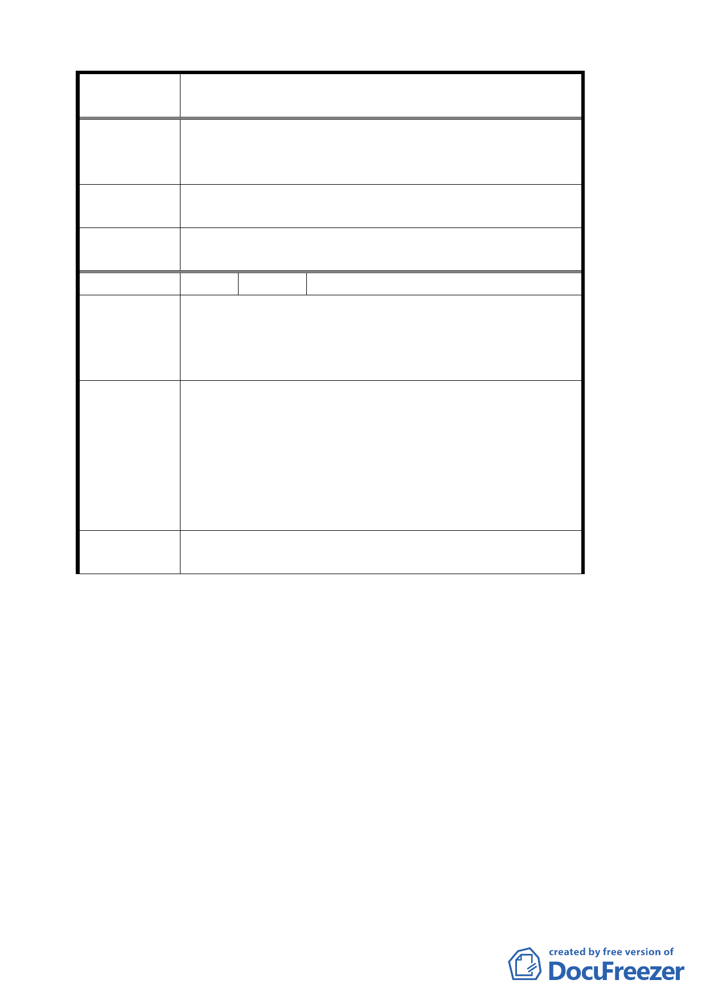

案 名 變更臺北市文山區指南里、老泉里部分保護區為休閒
產業特定專用區都市計畫案
員在審議本案時重視農民之實際困難與需求，珍惜當
地生態文化資源，發展以農業為主軸的休閒活動，尊
重並保障農民從事農作農事的權益。
建議辦法
所謂「休閒產業特定專用區」之名稱應更改為「休閒
農業特定專用區」。
委員會決議
本案依市府提案修正名稱，並依計畫內容增進地區發
展。
編 號 １８ 陳情人 陳崇雄
本人擁有之農地位文山區指南段二小段 79、80、81 地
陳情理由
號，雖位處本計畫案所劃定之區域內，但因未符合農
地連接道路之要求，而空有計畫之名無發展之實，致
使此都市計畫的功能未能真正展現，特提出建議。
本人農地雖未緊鄰道路，確有早期產業路可作為連
結，不應排除在外。加上本農地深具發展為休閒園區
之景觀價值，懇請貴單位同意本人以自設聯絡步道之
建 議 辦 法 方式予以開發。
根據休閒產業專用區理念與社區營造的觀念，在環境
評估無虞下，應創造良好的休閒空間，與提供居民合
適的生計條件，萬不可因未緊鄰道路而排除在外。
委員會決議
應緊鄰道路為通案性規定，建議考量與鄰地合併開發
以達緊鄰道路之計畫原則。
討論事項四
案名：擬劃定「臺北內湖區康寧段 2 小段 262 地號等 29 筆土地為
更新地區（更新單元）」計畫案
說明：
一、本案係市府以 94 年 10 月 5 日府都新字第 09406017700 號
函送到會。
二、法令依據：都市計畫法第 66 條、都市更新條例第 5 條、第
6 條（第 2、4 款及第 6 款）、第 8 條、第 11 條、第 27 條
暨都市更新條例施行細則第 5 條。
三、辦理單位：臺北市政府
一六